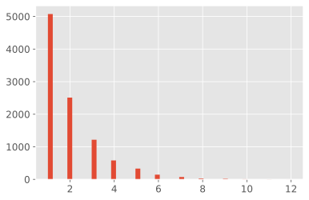

2. 端到端的机器学习项目¶
大局观¶
一个端到端的机器学习项目经历的步骤主要:
观察大局
获得数据
从数据探索和可视化中获得洞见
ML算法的数据准备
选择和训练数据
微调模型
展示解决方案
启动、监控和维护数据
使用真实的数据
流行的开放数据存储库
元门户点
http://dataportals.org/
http://opendatamonitor.eu/
http://quandl.com/
其他一些列出许多流行的开放数据存储库的地址
知识点：
一种常见的分布是呈钟形态的分布，称为正态分布（也叫高斯分布），“68-95-99.7”的规则是指：大约68%的值落在$1\sigma$内，95%落在$2\sigma$内，99.7%落在$3\sigma$内
当数据有很多离群区域时，可以考虑使用平均绝对误差-MSE代替均方根误差-RMSE
均方根误差-RMSE对应欧几里得范数，也称为$l_2$范数，记作$||.||_2$
平均绝对误差-MSE对应$l_1$范数，记作$||.||_1$，有时也被称为曼哈顿距离
范数指数越高，越关注大的价值，忽视小的价值。这就是为什么RMSE比MAE对异常值更敏感的原因。当异常值非常稀少（例如钟形曲线）时，RMSE的表现优异，通常作为首选。
我们在很多设置随机种子的代码中，都会看到
np.random.seed(42)，其中的42数字并没有特殊属性，只是“关于生命、宇宙和一切终极问题的答案”而已（来自《银河系搭车客指南》）使用
sklearn.preprocessing.LabelBinarizer一次完成sklearn.preprocessing.LabelEncoder和sklearn.preprocessing.OneHotEncoder的操作使用
pandas.plotting.scatter_matrix绘制相关矩阵图
创建测试集¶
数据窥探偏误(data snooping bias): 大脑是一个非常神奇的模式检测系统，也就出说它很容易过拟合：如果你本人浏览测试数据集，你很可能会跌入某个看似有趣的数据模式，进而选择某个特殊的机器学习模型。然后再使用模型对泛化误差率进行估算的时候，估计结果将会过于乐观。
代码¶
# To support both python 2 and python 3
from __future__ import division, print_function, unicode_literals
# Common imports
import numpy as np
import os
# to make this notebook's output stable across runs
np.random.seed(42)
# To plot pretty figures
%matplotlib inline
import matplotlib as mpl
import matplotlib.pyplot as plt
mpl.rc('axes', labelsize=14)
mpl.rc('xtick', labelsize=12)
mpl.rc('ytick', labelsize=12)
# Where to save the figures
import os
PROJECT_ROOT_DIR = os.getcwd()
IMAGES_PATH = os.path.join(PROJECT_ROOT_DIR, "images")
def save_fig(fig_id, tight_layout=True, fig_extension="png", resolution=300):
path = os.path.join(IMAGES_PATH, fig_id + "." + fig_extension)
print("Saving figure", fig_id)
if tight_layout:
plt.tight_layout()
plt.savefig(path, format=fig_extension, dpi=resolution)
# Ignore useless warnings (see SciPy issue #5998)
import warnings
warnings.filterwarnings(action="ignore", message="^internal gelsd")
获取数据集¶
# 使用tqdm定义一个可以在notebook中使用的进度条指示器
from tqdm import tqdm, tqdm_notebook
def progress_hook(t):
"""
封装一个tqdm实例。当结束的时候不要忘了调用close()或者__exit__()，最简单的方法是使用with语法
示例
-------
>>> with tqdm() as t:
... reporthook = my_hook(t)
... urllib.urlretrieve(..., reporthook=reporthook)
"""
last_b = [0]
def inner(b=1, bsize=1, tsize=None):
"""
b : int, optional
已经处理的blocks的数量，默认为1
bsize : int, optional
每个block的大小（以tqdm的单位计算）， 默认为1
tsize : int, optional
总共的size（tqdm单位），默认为None，表示不变
"""
if tsize is not None:
t.total = tsize
t.update((b - last_b[0]) * bsize)
last_b[0] = b
return inner
import os
import tarfile
from urllib import request
#DOWNLOAD_ROOT = "https://raw.githubusercontent.com/ageron/handson-ml/master/"
# 为了在内网下面可以测试
DOWNLOAD_ROOT = "https://shawnzhang31.com/opencv-learning/bundle3/"
HOUSING_PATH = os.path.join("datasets", "housing")
HOUSING_URL = DOWNLOAD_ROOT + "datasets/housing/housing.tgz"
def fetch_housing_data(housing_url=HOUSING_URL, housing_path=HOUSING_PATH):
os.makedirs(housing_path, exist_ok=True)
tgz_path = os.path.join(housing_path, "housing.tgz")
with tqdm(unit='B', unit_scale=True, leave=True, miniters=1) as t:
request.urlretrieve(housing_url, tgz_path, reporthook=progress_hook(t), data=None)
housing_tgz = tarfile.open(tgz_path)
housing_tgz.extractall(path=housing_path)
housing_tgz.close()
fetch_housing_data()
410kB [00:02, 156kB/s]
import pandas as pd
def load_housing_data(housing_path=HOUSING_PATH):
csv_path = os.path.join(housing_path, "housing.csv")
return pd.read_csv(csv_path)
housing = load_housing_data()
housing.head()
| longitude | latitude | housing_median_age | total_rooms | total_bedrooms | population | households | median_income | median_house_value | ocean_proximity | |
|---|---|---|---|---|---|---|---|---|---|---|
| 0 | -122.23 | 37.88 | 41.0 | 880.0 | 129.0 | 322.0 | 126.0 | 8.3252 | 452600.0 | NEAR BAY |
| 1 | -122.22 | 37.86 | 21.0 | 7099.0 | 1106.0 | 2401.0 | 1138.0 | 8.3014 | 358500.0 | NEAR BAY |
| 2 | -122.24 | 37.85 | 52.0 | 1467.0 | 190.0 | 496.0 | 177.0 | 7.2574 | 352100.0 | NEAR BAY |
| 3 | -122.25 | 37.85 | 52.0 | 1274.0 | 235.0 | 558.0 | 219.0 | 5.6431 | 341300.0 | NEAR BAY |
| 4 | -122.25 | 37.85 | 52.0 | 1627.0 | 280.0 | 565.0 | 259.0 | 3.8462 | 342200.0 | NEAR BAY |
housing.info()
<class 'pandas.core.frame.DataFrame'>
RangeIndex: 20640 entries, 0 to 20639
Data columns (total 10 columns):
# Column Non-Null Count Dtype
--- ------ -------------- -----
0 longitude 20640 non-null float64
1 latitude 20640 non-null float64
2 housing_median_age 20640 non-null float64
3 total_rooms 20640 non-null float64
4 total_bedrooms 20433 non-null float64
5 population 20640 non-null float64
6 households 20640 non-null float64
7 median_income 20640 non-null float64
8 median_house_value 20640 non-null float64
9 ocean_proximity 20640 non-null object
dtypes: float64(9), object(1)
memory usage: 1.6+ MB
housing["ocean_proximity"].value_counts()
<1H OCEAN 9136
INLAND 6551
NEAR OCEAN 2658
NEAR BAY 2290
ISLAND 5
Name: ocean_proximity, dtype: int64
housing.describe()
| longitude | latitude | housing_median_age | total_rooms | total_bedrooms | population | households | median_income | median_house_value | |
|---|---|---|---|---|---|---|---|---|---|
| count | 20640.000000 | 20640.000000 | 20640.000000 | 20640.000000 | 20433.000000 | 20640.000000 | 20640.000000 | 20640.000000 | 20640.000000 |
| mean | -119.569704 | 35.631861 | 28.639486 | 2635.763081 | 537.870553 | 1425.476744 | 499.539680 | 3.870671 | 206855.816909 |
| std | 2.003532 | 2.135952 | 12.585558 | 2181.615252 | 421.385070 | 1132.462122 | 382.329753 | 1.899822 | 115395.615874 |
| min | -124.350000 | 32.540000 | 1.000000 | 2.000000 | 1.000000 | 3.000000 | 1.000000 | 0.499900 | 14999.000000 |
| 25% | -121.800000 | 33.930000 | 18.000000 | 1447.750000 | 296.000000 | 787.000000 | 280.000000 | 2.563400 | 119600.000000 |
| 50% | -118.490000 | 34.260000 | 29.000000 | 2127.000000 | 435.000000 | 1166.000000 | 409.000000 | 3.534800 | 179700.000000 |
| 75% | -118.010000 | 37.710000 | 37.000000 | 3148.000000 | 647.000000 | 1725.000000 | 605.000000 | 4.743250 | 264725.000000 |
| max | -114.310000 | 41.950000 | 52.000000 | 39320.000000 | 6445.000000 | 35682.000000 | 6082.000000 | 15.000100 | 500001.000000 |
%matplotlib inline
import matplotlib.pyplot as plt
plt.style.use("ggplot")
housing.hist(bins=50, figsize=(20,15))
# save_fig("attribute_histogram_plots")
plt.show()
# to make this notebook's output identical at every run
np.random.seed(42)
import numpy as np
# 这里只是演示使用， sklearn有自己的train_test_split()
def split_train_test(data, test_ratio):
shuffled_indices = np.random.permutation(len(data))
test_set_size = int(len(data) * test_ratio)
test_indices = shuffled_indices[:test_set_size]
train_indices = shuffled_indices[test_set_size:]
return data.iloc[train_indices], data.iloc[test_indices]
train_set, test_set = split_train_test(housing, 0.2)
print(len(train_set), "train +", len(test_set), "test")
16512 train + 4128 test
from zlib import crc32
def test_set_check(identifier, test_ratio):
return crc32(np.int64(identifier)) & 0xffffffff < test_ratio * 2**32
def split_train_test_by_id(data, test_ratio, id_column):
ids = data[id_column]
in_test_set = ids.apply(lambda id_: test_set_check(id_, test_ratio))
return data.loc[~in_test_set], data.loc[in_test_set]
The implementation of test_set_check() above works fine in both Python 2 and Python 3. In earlier releases, the following implementation was proposed, which supported any hash function, but was much slower and did not support Python 2:
import hashlib
def test_set_check(identifier, test_ratio, hash=hashlib.md5):
return hash(np.int64(identifier)).digest()[-1] < 256 * test_ratio
If you want an implementation that supports any hash function and is compatible with both Python 2 and Python 3, here is one:
def test_set_check(identifier, test_ratio, hash=hashlib.md5):
return bytearray(hash(np.int64(identifier)).digest())[-1] < 256 * test_ratio
housing_with_id = housing.reset_index() # adds an `index` column
train_set, test_set = split_train_test_by_id(housing_with_id, 0.2, "index")
housing_with_id["id"] = housing["longitude"] * 1000 + housing["latitude"]
train_set, test_set = split_train_test_by_id(housing_with_id, 0.2, "id")
test_set.head()
| index | longitude | latitude | housing_median_age | total_rooms | total_bedrooms | population | households | median_income | median_house_value | ocean_proximity | id | |
|---|---|---|---|---|---|---|---|---|---|---|---|---|
| 8 | 8 | -122.26 | 37.84 | 42.0 | 2555.0 | 665.0 | 1206.0 | 595.0 | 2.0804 | 226700.0 | NEAR BAY | -122222.16 |
| 10 | 10 | -122.26 | 37.85 | 52.0 | 2202.0 | 434.0 | 910.0 | 402.0 | 3.2031 | 281500.0 | NEAR BAY | -122222.15 |
| 11 | 11 | -122.26 | 37.85 | 52.0 | 3503.0 | 752.0 | 1504.0 | 734.0 | 3.2705 | 241800.0 | NEAR BAY | -122222.15 |
| 12 | 12 | -122.26 | 37.85 | 52.0 | 2491.0 | 474.0 | 1098.0 | 468.0 | 3.0750 | 213500.0 | NEAR BAY | -122222.15 |
| 13 | 13 | -122.26 | 37.84 | 52.0 | 696.0 | 191.0 | 345.0 | 174.0 | 2.6736 | 191300.0 | NEAR BAY | -122222.16 |
from sklearn.model_selection import train_test_split
train_set, test_set = train_test_split(housing, test_size=0.2, random_state=42)
test_set.head()
| longitude | latitude | housing_median_age | total_rooms | total_bedrooms | population | households | median_income | median_house_value | ocean_proximity | |
|---|---|---|---|---|---|---|---|---|---|---|
| 20046 | -119.01 | 36.06 | 25.0 | 1505.0 | NaN | 1392.0 | 359.0 | 1.6812 | 47700.0 | INLAND |
| 3024 | -119.46 | 35.14 | 30.0 | 2943.0 | NaN | 1565.0 | 584.0 | 2.5313 | 45800.0 | INLAND |
| 15663 | -122.44 | 37.80 | 52.0 | 3830.0 | NaN | 1310.0 | 963.0 | 3.4801 | 500001.0 | NEAR BAY |
| 20484 | -118.72 | 34.28 | 17.0 | 3051.0 | NaN | 1705.0 | 495.0 | 5.7376 | 218600.0 | <1H OCEAN |
| 9814 | -121.93 | 36.62 | 34.0 | 2351.0 | NaN | 1063.0 | 428.0 | 3.7250 | 278000.0 | NEAR OCEAN |
housing["median_income"].hist()
<AxesSubplot:>
Warning: in the book, I did not use pd.cut(), instead I used the code below. The pd.cut() solution gives the same result (except the labels are integers instead of floats), but it is simpler to understand:
# Divide by 1.5 to limit the number of income categories
housing["income_cat"] = np.ceil(housing["median_income"] / 1.5)
# Label those above 5 as 5
housing["income_cat"].where(housing["income_cat"] < 5, 5.0, inplace=True)
housing["income_cat"] = pd.cut(housing["median_income"],
bins=[0., 1.5, 3.0, 4.5, 6., np.inf],
labels=[1, 2, 3, 4, 5])
housing["income_cat"].value_counts()
3 7236
2 6581
4 3639
5 2362
1 822
Name: income_cat, dtype: int64
housing["income_cat"].hist()
<AxesSubplot:>
分层采样¶
from sklearn.model_selection import StratifiedShuffleSplit
split = StratifiedShuffleSplit(n_splits=1, test_size=0.2, random_state=42)
for train_index, test_index in split.split(housing, housing["income_cat"]):
strat_train_set = housing.loc[train_index]
strat_test_set = housing.loc[test_index]
strat_test_set["income_cat"].value_counts() / len(strat_test_set)
3 0.350533
2 0.318798
4 0.176357
5 0.114583
1 0.039729
Name: income_cat, dtype: float64
housing["income_cat"].value_counts() / len(housing)
3 0.350581
2 0.318847
4 0.176308
5 0.114438
1 0.039826
Name: income_cat, dtype: float64
def income_cat_proportions(data):
return data["income_cat"].value_counts() / len(data)
train_set, test_set = train_test_split(housing, test_size=0.2, random_state=42)
compare_props = pd.DataFrame({
"Overall": income_cat_proportions(housing),
"Stratified": income_cat_proportions(strat_test_set),
"Random": income_cat_proportions(test_set),
}).sort_index()
compare_props["Rand. %error"] = 100 * compare_props["Random"] / compare_props["Overall"] - 100
compare_props["Strat. %error"] = 100 * compare_props["Stratified"] / compare_props["Overall"] - 100
compare_props
| Overall | Stratified | Random | Rand. %error | Strat. %error | |
|---|---|---|---|---|---|
| 1 | 0.039826 | 0.039729 | 0.040213 | 0.973236 | -0.243309 |
| 2 | 0.318847 | 0.318798 | 0.324370 | 1.732260 | -0.015195 |
| 3 | 0.350581 | 0.350533 | 0.358527 | 2.266446 | -0.013820 |
| 4 | 0.176308 | 0.176357 | 0.167393 | -5.056334 | 0.027480 |
| 5 | 0.114438 | 0.114583 | 0.109496 | -4.318374 | 0.127011 |
for set_ in (strat_train_set, strat_test_set):
set_.drop("income_cat", axis=1, inplace=True)
从数据可视化中获取数据启示¶
housing = strat_train_set.copy()
housing.plot(kind="scatter", x="longitude", y="latitude")
# save_fig("bad_visualization_plot")
<AxesSubplot:xlabel='longitude', ylabel='latitude'>

# 使用alpha通道的设置，使得密集叠加区域明显表示出来
housing.plot(kind="scatter", x="longitude", y="latitude", alpha=0.1)
# save_fig("better_visualization_plot")
<AxesSubplot:xlabel='longitude', ylabel='latitude'>

The argument sharex=False fixes a display bug (the x-axis values and legend were not displayed). This is a temporary fix (see: https://github.com/pandas-dev/pandas/issues/10611). Thanks to Wilmer Arellano for pointing it out.
housing.plot(kind="scatter", x="longitude", y="latitude", alpha=0.4,
s=housing["population"]/100, label="population", figsize=(10,10),
c="median_house_value", cmap=plt.get_cmap("jet"), colorbar=True,
sharex=False)
plt.legend()
# save_fig("housing_prices_scatterplot")
<matplotlib.legend.Legend at 0x7fab90c836d0>

import matplotlib.image as mpimg
california_img=mpimg.imread(PROJECT_ROOT_DIR + '/images/california.png')
ax = housing.plot(kind="scatter", x="longitude", y="latitude", figsize=(10,7),
s=housing['population']/100, label="Population",
c="median_house_value", cmap=plt.get_cmap("jet"),
colorbar=False, alpha=0.4,
)
plt.imshow(california_img, extent=[-124.55, -113.80, 32.45, 42.05], alpha=0.5,
cmap=plt.get_cmap("jet"))
plt.ylabel("Latitude", fontsize=14)
plt.xlabel("Longitude", fontsize=14)
prices = housing["median_house_value"]
tick_values = np.linspace(prices.min(), prices.max(), 11)
cbar = plt.colorbar()
cbar.ax.set_yticklabels(["$%dk"%(round(v/1000)) for v in tick_values], fontsize=14)
cbar.set_label('Median House Value', fontsize=16)
plt.legend(fontsize=16)
# save_fig("california_housing_prices_plot")
# plt.show()
<matplotlib.legend.Legend at 0x7fab90f7a110>

相关矩阵¶
corr_matrix = housing.corr()
corr_matrix["median_house_value"].sort_values(ascending=False)
median_house_value 1.000000
median_income 0.687160
total_rooms 0.135097
housing_median_age 0.114110
households 0.064506
total_bedrooms 0.047689
population -0.026920
longitude -0.047432
latitude -0.142724
Name: median_house_value, dtype: float64
# from pandas.tools.plotting import scatter_matrix # For older versions of Pandas
from pandas.plotting import scatter_matrix
attributes = ["median_house_value", "median_income", "total_rooms",
"housing_median_age"]
scatter_matrix(housing[attributes], figsize=(12, 8))
save_fig("scatter_matrix_plot")
Saving figure scatter_matrix_plot

housing.plot(kind="scatter", x="median_income", y="median_house_value",
alpha=0.1)
plt.axis([0, 16, 0, 550000])
# save_fig("income_vs_house_value_scatterplot")
(0.0, 16.0, 0.0, 550000.0)

housing["rooms_per_household"] = housing["total_rooms"]/housing["households"]
housing["bedrooms_per_room"] = housing["total_bedrooms"]/housing["total_rooms"]
housing["population_per_household"]=housing["population"]/housing["households"]
Note: there was a bug in the previous cell, in the definition of the rooms_per_household attribute. This explains why the correlation value below differs slightly from the value in the book (unless you are reading the latest version).
corr_matrix = housing.corr()
corr_matrix["median_house_value"].sort_values(ascending=False)
median_house_value 1.000000
median_income 0.687160
rooms_per_household 0.146285
total_rooms 0.135097
housing_median_age 0.114110
households 0.064506
total_bedrooms 0.047689
population_per_household -0.021985
population -0.026920
longitude -0.047432
latitude -0.142724
bedrooms_per_room -0.259984
Name: median_house_value, dtype: float64
housing.plot(kind="scatter", x="rooms_per_household", y="median_house_value",
alpha=0.2)
plt.axis([0, 5, 0, 520000])
plt.show()

housing.describe()
| longitude | latitude | housing_median_age | total_rooms | total_bedrooms | population | households | median_income | median_house_value | rooms_per_household | bedrooms_per_room | population_per_household | |
|---|---|---|---|---|---|---|---|---|---|---|---|---|
| count | 16512.000000 | 16512.000000 | 16512.000000 | 16512.000000 | 16354.000000 | 16512.000000 | 16512.000000 | 16512.000000 | 16512.000000 | 16512.000000 | 16354.000000 | 16512.000000 |
| mean | -119.575834 | 35.639577 | 28.653101 | 2622.728319 | 534.973890 | 1419.790819 | 497.060380 | 3.875589 | 206990.920724 | 5.440341 | 0.212878 | 3.096437 |
| std | 2.001860 | 2.138058 | 12.574726 | 2138.458419 | 412.699041 | 1115.686241 | 375.720845 | 1.904950 | 115703.014830 | 2.611712 | 0.057379 | 11.584826 |
| min | -124.350000 | 32.540000 | 1.000000 | 6.000000 | 2.000000 | 3.000000 | 2.000000 | 0.499900 | 14999.000000 | 1.130435 | 0.100000 | 0.692308 |
| 25% | -121.800000 | 33.940000 | 18.000000 | 1443.000000 | 295.000000 | 784.000000 | 279.000000 | 2.566775 | 119800.000000 | 4.442040 | 0.175304 | 2.431287 |
| 50% | -118.510000 | 34.260000 | 29.000000 | 2119.500000 | 433.000000 | 1164.000000 | 408.000000 | 3.540900 | 179500.000000 | 5.232284 | 0.203031 | 2.817653 |
| 75% | -118.010000 | 37.720000 | 37.000000 | 3141.000000 | 644.000000 | 1719.250000 | 602.000000 | 4.744475 | 263900.000000 | 6.056361 | 0.239831 | 3.281420 |
| max | -114.310000 | 41.950000 | 52.000000 | 39320.000000 | 6210.000000 | 35682.000000 | 5358.000000 | 15.000100 | 500001.000000 | 141.909091 | 1.000000 | 1243.333333 |
为ML准备数据¶
housing = strat_train_set.drop("median_house_value", axis=1) # drop labels for training set
housing_labels = strat_train_set["median_house_value"].copy()
sample_incomplete_rows = housing[housing.isnull().any(axis=1)].head()
sample_incomplete_rows
| longitude | latitude | housing_median_age | total_rooms | total_bedrooms | population | households | median_income | ocean_proximity | |
|---|---|---|---|---|---|---|---|---|---|
| 4629 | -118.30 | 34.07 | 18.0 | 3759.0 | NaN | 3296.0 | 1462.0 | 2.2708 | <1H OCEAN |
| 6068 | -117.86 | 34.01 | 16.0 | 4632.0 | NaN | 3038.0 | 727.0 | 5.1762 | <1H OCEAN |
| 17923 | -121.97 | 37.35 | 30.0 | 1955.0 | NaN | 999.0 | 386.0 | 4.6328 | <1H OCEAN |
| 13656 | -117.30 | 34.05 | 6.0 | 2155.0 | NaN | 1039.0 | 391.0 | 1.6675 | INLAND |
| 19252 | -122.79 | 38.48 | 7.0 | 6837.0 | NaN | 3468.0 | 1405.0 | 3.1662 | <1H OCEAN |
sample_incomplete_rows.dropna(subset=["total_bedrooms"]) # option 1
| longitude | latitude | housing_median_age | total_rooms | total_bedrooms | population | households | median_income | ocean_proximity |
|---|
sample_incomplete_rows.drop("total_bedrooms", axis=1) # option 2
| longitude | latitude | housing_median_age | total_rooms | population | households | median_income | ocean_proximity | |
|---|---|---|---|---|---|---|---|---|
| 4629 | -118.30 | 34.07 | 18.0 | 3759.0 | 3296.0 | 1462.0 | 2.2708 | <1H OCEAN |
| 6068 | -117.86 | 34.01 | 16.0 | 4632.0 | 3038.0 | 727.0 | 5.1762 | <1H OCEAN |
| 17923 | -121.97 | 37.35 | 30.0 | 1955.0 | 999.0 | 386.0 | 4.6328 | <1H OCEAN |
| 13656 | -117.30 | 34.05 | 6.0 | 2155.0 | 1039.0 | 391.0 | 1.6675 | INLAND |
| 19252 | -122.79 | 38.48 | 7.0 | 6837.0 | 3468.0 | 1405.0 | 3.1662 | <1H OCEAN |
median = housing["total_bedrooms"].median()
sample_incomplete_rows["total_bedrooms"].fillna(median, inplace=True) # option 3
sample_incomplete_rows
| longitude | latitude | housing_median_age | total_rooms | total_bedrooms | population | households | median_income | ocean_proximity | |
|---|---|---|---|---|---|---|---|---|---|
| 4629 | -118.30 | 34.07 | 18.0 | 3759.0 | 433.0 | 3296.0 | 1462.0 | 2.2708 | <1H OCEAN |
| 6068 | -117.86 | 34.01 | 16.0 | 4632.0 | 433.0 | 3038.0 | 727.0 | 5.1762 | <1H OCEAN |
| 17923 | -121.97 | 37.35 | 30.0 | 1955.0 | 433.0 | 999.0 | 386.0 | 4.6328 | <1H OCEAN |
| 13656 | -117.30 | 34.05 | 6.0 | 2155.0 | 433.0 | 1039.0 | 391.0 | 1.6675 | INLAND |
| 19252 | -122.79 | 38.48 | 7.0 | 6837.0 | 433.0 | 3468.0 | 1405.0 | 3.1662 | <1H OCEAN |
Warning: Since Scikit-Learn 0.20, the sklearn.preprocessing.Imputer class was replaced by the sklearn.impute.SimpleImputer class.
try:
from sklearn.impute import SimpleImputer # Scikit-Learn 0.20+
except ImportError:
from sklearn.preprocessing import Imputer as SimpleImputer
imputer = SimpleImputer(strategy="median")
median只能在数字列进行计算，所以需要移除文字列
housing_num = housing.drop('ocean_proximity', axis=1)
# alternatively: housing_num = housing.select_dtypes(include=[np.number])
imputer.fit(housing_num)
SimpleImputer(strategy='median')
imputer.statistics_
array([-118.51 , 34.26 , 29. , 2119.5 , 433. , 1164. ,
408. , 3.5409])
可是使用housing_num.median().values对比一下，看看SimpleImputer的计算是否正确
housing_num.median().values
array([-118.51 , 34.26 , 29. , 2119.5 , 433. , 1164. ,
408. , 3.5409])
Transform the training set:
X = imputer.transform(housing_num)
housing_tr = pd.DataFrame(X, columns=housing_num.columns,
index=housing.index)
housing_tr.loc[sample_incomplete_rows.index.values]
| longitude | latitude | housing_median_age | total_rooms | total_bedrooms | population | households | median_income | |
|---|---|---|---|---|---|---|---|---|
| 4629 | -118.30 | 34.07 | 18.0 | 3759.0 | 433.0 | 3296.0 | 1462.0 | 2.2708 |
| 6068 | -117.86 | 34.01 | 16.0 | 4632.0 | 433.0 | 3038.0 | 727.0 | 5.1762 |
| 17923 | -121.97 | 37.35 | 30.0 | 1955.0 | 433.0 | 999.0 | 386.0 | 4.6328 |
| 13656 | -117.30 | 34.05 | 6.0 | 2155.0 | 433.0 | 1039.0 | 391.0 | 1.6675 |
| 19252 | -122.79 | 38.48 | 7.0 | 6837.0 | 433.0 | 3468.0 | 1405.0 | 3.1662 |
imputer.strategy
'median'
housing_tr = pd.DataFrame(X, columns=housing_num.columns,
index=housing_num.index)
housing_tr.head()
| longitude | latitude | housing_median_age | total_rooms | total_bedrooms | population | households | median_income | |
|---|---|---|---|---|---|---|---|---|
| 17606 | -121.89 | 37.29 | 38.0 | 1568.0 | 351.0 | 710.0 | 339.0 | 2.7042 |
| 18632 | -121.93 | 37.05 | 14.0 | 679.0 | 108.0 | 306.0 | 113.0 | 6.4214 |
| 14650 | -117.20 | 32.77 | 31.0 | 1952.0 | 471.0 | 936.0 | 462.0 | 2.8621 |
| 3230 | -119.61 | 36.31 | 25.0 | 1847.0 | 371.0 | 1460.0 | 353.0 | 1.8839 |
| 3555 | -118.59 | 34.23 | 17.0 | 6592.0 | 1525.0 | 4459.0 | 1463.0 | 3.0347 |
现在处理分类的输入特征, ocean_proximity:
housing_cat = housing[['ocean_proximity']]
housing_cat.head(10)
| ocean_proximity | |
|---|---|
| 17606 | <1H OCEAN |
| 18632 | <1H OCEAN |
| 14650 | NEAR OCEAN |
| 3230 | INLAND |
| 3555 | <1H OCEAN |
| 19480 | INLAND |
| 8879 | <1H OCEAN |
| 13685 | INLAND |
| 4937 | <1H OCEAN |
| 4861 | <1H OCEAN |
Warning: earlier versions of the book used the LabelEncoder class or Pandas’ Series.factorize() method to encode string categorical attributes as integers. However, the OrdinalEncoder class that was introduced in Scikit-Learn 0.20 (see PR #10521) is preferable since it is designed for input features (X instead of labels y) and it plays well with pipelines (introduced later in this notebook). If you are using an older version of Scikit-Learn (<0.20), then you can import it from future_encoders.py instead.
try:
from sklearn.preprocessing import OrdinalEncoder
except ImportError:
from future_encoders import OrdinalEncoder # Scikit-Learn < 0.20
ordinal_encoder = OrdinalEncoder()
housing_cat_encoded = ordinal_encoder.fit_transform(housing_cat)
housing_cat_encoded[:10]
array([[0.],
[0.],
[4.],
[1.],
[0.],
[1.],
[0.],
[1.],
[0.],
[0.]])
ordinal_encoder.categories_
[array(['<1H OCEAN', 'INLAND', 'ISLAND', 'NEAR BAY', 'NEAR OCEAN'],
dtype=object)]
Warning: earlier versions of the book used the LabelBinarizer or CategoricalEncoder classes to convert each categorical value to a one-hot vector. It is now preferable to use the OneHotEncoder class. Since Scikit-Learn 0.20 it can handle string categorical inputs (see PR #10521), not just integer categorical inputs. If you are using an older version of Scikit-Learn, you can import the new version from future_encoders.py:
try:
from sklearn.preprocessing import OrdinalEncoder # just to raise an ImportError if Scikit-Learn < 0.20
from sklearn.preprocessing import OneHotEncoder
except ImportError:
from future_encoders import OneHotEncoder # Scikit-Learn < 0.20
cat_encoder = OneHotEncoder()
housing_cat_1hot = cat_encoder.fit_transform(housing_cat)
housing_cat_1hot
<16512x5 sparse matrix of type '<class 'numpy.float64'>'
with 16512 stored elements in Compressed Sparse Row format>
By default, the OneHotEncoder class returns a sparse array, but we can convert it to a dense array if needed by calling the toarray() method:
housing_cat_1hot.toarray()
array([[1., 0., 0., 0., 0.],
[1., 0., 0., 0., 0.],
[0., 0., 0., 0., 1.],
...,
[0., 1., 0., 0., 0.],
[1., 0., 0., 0., 0.],
[0., 0., 0., 1., 0.]])
Alternatively, you can set sparse=False when creating the OneHotEncoder:
cat_encoder = OneHotEncoder(sparse=False)
housing_cat_1hot = cat_encoder.fit_transform(housing_cat)
housing_cat_1hot
array([[1., 0., 0., 0., 0.],
[1., 0., 0., 0., 0.],
[0., 0., 0., 0., 1.],
...,
[0., 1., 0., 0., 0.],
[1., 0., 0., 0., 0.],
[0., 0., 0., 1., 0.]])
cat_encoder.categories_
[array(['<1H OCEAN', 'INLAND', 'ISLAND', 'NEAR BAY', 'NEAR OCEAN'],
dtype=object)]
Let’s create a custom transformer to add extra attributes:
housing.columns
Index(['longitude', 'latitude', 'housing_median_age', 'total_rooms',
'total_bedrooms', 'population', 'households', 'median_income',
'ocean_proximity'],
dtype='object')
from sklearn.base import BaseEstimator, TransformerMixin
# get the right column indices: safer than hard-coding indices 3, 4, 5, 6
rooms_ix, bedrooms_ix, population_ix, household_ix = [
list(housing.columns).index(col)
for col in ("total_rooms", "total_bedrooms", "population", "households")]
class CombinedAttributesAdder(BaseEstimator, TransformerMixin):
def __init__(self, add_bedrooms_per_room = True): # no *args or **kwargs
self.add_bedrooms_per_room = add_bedrooms_per_room
def fit(self, X, y=None):
return self # nothing else to do
def transform(self, X, y=None):
rooms_per_household = X[:, rooms_ix] / X[:, household_ix]
population_per_household = X[:, population_ix] / X[:, household_ix]
if self.add_bedrooms_per_room:
bedrooms_per_room = X[:, bedrooms_ix] / X[:, rooms_ix]
return np.c_[X, rooms_per_household, population_per_household,
bedrooms_per_room]
else:
return np.c_[X, rooms_per_household, population_per_household]
attr_adder = CombinedAttributesAdder(add_bedrooms_per_room=False)
housing_extra_attribs = attr_adder.transform(housing.values)
Alternatively, you can use Scikit-Learn’s FunctionTransformer class that lets you easily create a transformer based on a transformation function (thanks to Hanmin Qin for suggesting this code). Note that we need to set validate=False because the data contains non-float values (validate will default to False in Scikit-Learn 0.22).
from sklearn.preprocessing import FunctionTransformer
def add_extra_features(X, add_bedrooms_per_room=True):
rooms_per_household = X[:, rooms_ix] / X[:, household_ix]
population_per_household = X[:, population_ix] / X[:, household_ix]
if add_bedrooms_per_room:
bedrooms_per_room = X[:, bedrooms_ix] / X[:, rooms_ix]
return np.c_[X, rooms_per_household, population_per_household,
bedrooms_per_room]
else:
return np.c_[X, rooms_per_household, population_per_household]
attr_adder = FunctionTransformer(add_extra_features, validate=False,
kw_args={"add_bedrooms_per_room": False})
housing_extra_attribs = attr_adder.fit_transform(housing.values)
housing_extra_attribs = pd.DataFrame(
housing_extra_attribs,
columns=list(housing.columns)+["rooms_per_household", "population_per_household"],
index=housing.index)
housing_extra_attribs.head()
| longitude | latitude | housing_median_age | total_rooms | total_bedrooms | population | households | median_income | ocean_proximity | rooms_per_household | population_per_household | |
|---|---|---|---|---|---|---|---|---|---|---|---|
| 17606 | -121.89 | 37.29 | 38 | 1568 | 351 | 710 | 339 | 2.7042 | <1H OCEAN | 4.62537 | 2.0944 |
| 18632 | -121.93 | 37.05 | 14 | 679 | 108 | 306 | 113 | 6.4214 | <1H OCEAN | 6.00885 | 2.70796 |
| 14650 | -117.2 | 32.77 | 31 | 1952 | 471 | 936 | 462 | 2.8621 | NEAR OCEAN | 4.22511 | 2.02597 |
| 3230 | -119.61 | 36.31 | 25 | 1847 | 371 | 1460 | 353 | 1.8839 | INLAND | 5.23229 | 4.13598 |
| 3555 | -118.59 | 34.23 | 17 | 6592 | 1525 | 4459 | 1463 | 3.0347 | <1H OCEAN | 4.50581 | 3.04785 |
Now let’s build a pipeline for preprocessing the numerical attributes (note that we could use CombinedAttributesAdder() instead of FunctionTransformer(...) if we preferred):
from sklearn.pipeline import Pipeline
from sklearn.preprocessing import StandardScaler
num_pipeline = Pipeline([
('imputer', SimpleImputer(strategy="median")),
('attribs_adder', FunctionTransformer(add_extra_features, validate=False)),
('std_scaler', StandardScaler()),
])
housing_num_tr = num_pipeline.fit_transform(housing_num)
housing_num_tr
array([[-1.15604281, 0.77194962, 0.74333089, ..., -0.31205452,
-0.08649871, 0.15531753],
[-1.17602483, 0.6596948 , -1.1653172 , ..., 0.21768338,
-0.03353391, -0.83628902],
[ 1.18684903, -1.34218285, 0.18664186, ..., -0.46531516,
-0.09240499, 0.4222004 ],
...,
[ 1.58648943, -0.72478134, -1.56295222, ..., 0.3469342 ,
-0.03055414, -0.52177644],
[ 0.78221312, -0.85106801, 0.18664186, ..., 0.02499488,
0.06150916, -0.30340741],
[-1.43579109, 0.99645926, 1.85670895, ..., -0.22852947,
-0.09586294, 0.10180567]])
Warning: earlier versions of the book applied different transformations to different columns using a solution based on a DataFrameSelector transformer and a FeatureUnion (see below). It is now preferable to use the ColumnTransformer class that was introduced in Scikit-Learn 0.20. If you are using an older version of Scikit-Learn, you can import it from future_encoders.py:
try:
from sklearn.compose import ColumnTransformer
except ImportError:
from future_encoders import ColumnTransformer # Scikit-Learn < 0.20
num_attribs = list(housing_num)
cat_attribs = ["ocean_proximity"]
full_pipeline = ColumnTransformer([
("num", num_pipeline, num_attribs),
("cat", OneHotEncoder(), cat_attribs),
])
housing_prepared = full_pipeline.fit_transform(housing)
housing_prepared
array([[-1.15604281, 0.77194962, 0.74333089, ..., 0. ,
0. , 0. ],
[-1.17602483, 0.6596948 , -1.1653172 , ..., 0. ,
0. , 0. ],
[ 1.18684903, -1.34218285, 0.18664186, ..., 0. ,
0. , 1. ],
...,
[ 1.58648943, -0.72478134, -1.56295222, ..., 0. ,
0. , 0. ],
[ 0.78221312, -0.85106801, 0.18664186, ..., 0. ,
0. , 0. ],
[-1.43579109, 0.99645926, 1.85670895, ..., 0. ,
1. , 0. ]])
housing_prepared.shape
(16512, 16)
For reference, here is the old solution based on a DataFrameSelector transformer (to just select a subset of the Pandas DataFrame columns), and a FeatureUnion:
from sklearn.base import BaseEstimator, TransformerMixin
# Create a class to select numerical or categorical columns
class OldDataFrameSelector(BaseEstimator, TransformerMixin):
def __init__(self, attribute_names):
self.attribute_names = attribute_names
def fit(self, X, y=None):
return self
def transform(self, X):
return X[self.attribute_names].values
Now let’s join all these components into a big pipeline that will preprocess both the numerical and the categorical features (again, we could use CombinedAttributesAdder() instead of FunctionTransformer(...) if we preferred):
num_attribs = list(housing_num)
cat_attribs = ["ocean_proximity"]
old_num_pipeline = Pipeline([
('selector', OldDataFrameSelector(num_attribs)),
('imputer', SimpleImputer(strategy="median")),
('attribs_adder', FunctionTransformer(add_extra_features, validate=False)),
('std_scaler', StandardScaler()),
])
old_cat_pipeline = Pipeline([
('selector', OldDataFrameSelector(cat_attribs)),
('cat_encoder', OneHotEncoder(sparse=False)),
])
from sklearn.pipeline import FeatureUnion
old_full_pipeline = FeatureUnion(transformer_list=[
("num_pipeline", old_num_pipeline),
("cat_pipeline", old_cat_pipeline),
])
old_housing_prepared = old_full_pipeline.fit_transform(housing)
old_housing_prepared
array([[-1.15604281, 0.77194962, 0.74333089, ..., 0. ,
0. , 0. ],
[-1.17602483, 0.6596948 , -1.1653172 , ..., 0. ,
0. , 0. ],
[ 1.18684903, -1.34218285, 0.18664186, ..., 0. ,
0. , 1. ],
...,
[ 1.58648943, -0.72478134, -1.56295222, ..., 0. ,
0. , 0. ],
[ 0.78221312, -0.85106801, 0.18664186, ..., 0. ,
0. , 0. ],
[-1.43579109, 0.99645926, 1.85670895, ..., 0. ,
1. , 0. ]])
The result is the same as with the ColumnTransformer:
np.allclose(housing_prepared, old_housing_prepared)
True
选择并训练一个模型¶
线性回归¶
from sklearn.linear_model import LinearRegression
lin_reg = LinearRegression()
lin_reg.fit(housing_prepared, housing_labels)
LinearRegression()
# let's try the full preprocessing pipeline on a few training instances
some_data = housing.iloc[:5]
some_labels = housing_labels.iloc[:5]
some_data_prepared = full_pipeline.transform(some_data)
print("Predictions:", lin_reg.predict(some_data_prepared))
Predictions: [210644.60459286 317768.80697211 210956.43331178 59218.98886849
189747.55849879]
与实际值进行对比
print("Labels:", list(some_labels))
Labels: [286600.0, 340600.0, 196900.0, 46300.0, 254500.0]
some_data_prepared
array([[-1.15604281, 0.77194962, 0.74333089, -0.49323393, -0.44543821,
-0.63621141, -0.42069842, -0.61493744, -0.31205452, -0.08649871,
0.15531753, 1. , 0. , 0. , 0. ,
0. ],
[-1.17602483, 0.6596948 , -1.1653172 , -0.90896655, -1.0369278 ,
-0.99833135, -1.02222705, 1.33645936, 0.21768338, -0.03353391,
-0.83628902, 1. , 0. , 0. , 0. ,
0. ],
[ 1.18684903, -1.34218285, 0.18664186, -0.31365989, -0.15334458,
-0.43363936, -0.0933178 , -0.5320456 , -0.46531516, -0.09240499,
0.4222004 , 0. , 0. , 0. , 0. ,
1. ],
[-0.01706767, 0.31357576, -0.29052016, -0.36276217, -0.39675594,
0.03604096, -0.38343559, -1.04556555, -0.07966124, 0.08973561,
-0.19645314, 0. , 1. , 0. , 0. ,
0. ],
[ 0.49247384, -0.65929936, -0.92673619, 1.85619316, 2.41221109,
2.72415407, 2.57097492, -0.44143679, -0.35783383, -0.00419445,
0.2699277 , 1. , 0. , 0. , 0. ,
0. ]])
from sklearn.metrics import mean_squared_error
housing_predictions = lin_reg.predict(housing_prepared)
lin_mse = mean_squared_error(housing_labels, housing_predictions)
lin_rmse = np.sqrt(lin_mse)
lin_rmse
68628.19819848922
from sklearn.metrics import mean_absolute_error
lin_mae = mean_absolute_error(housing_labels, housing_predictions)
lin_mae
49439.89599001897
决策树回归¶
from sklearn.tree import DecisionTreeRegressor
tree_reg = DecisionTreeRegressor(random_state=42)
tree_reg.fit(housing_prepared, housing_labels)
DecisionTreeRegressor(random_state=42)
housing_predictions = tree_reg.predict(housing_prepared)
tree_mse = mean_squared_error(housing_labels, housing_predictions)
tree_rmse = np.sqrt(tree_mse)
tree_rmse
0.0
靠，MSE为0，说明DTR已经在训练集上过拟合了
Fine-Tune模型¶
使用交叉验证来更好的评估模型¶
下面是10-flod的方法，将训练集拆分为10个子集，9个用于训练，一个用于验证；Scikit-Learn的交叉验证功能倾向于使用效用函数（越大越好）而不是成本函数（越小越好），所以计算分数的函数实际上是负的MSE函数，这就是为什么下面的代码在计算平方根之前会先计算出-scores的原因
from sklearn.model_selection import cross_val_score
scores = cross_val_score(tree_reg, housing_prepared, housing_labels,
scoring="neg_mean_squared_error", cv=10)
tree_rmse_scores = np.sqrt(-scores)
def display_scores(scores):
print("Scores:", scores)
print("Mean:", scores.mean())
print("Standard deviation:", scores.std())
display_scores(tree_rmse_scores)
Scores: [70194.33680785 66855.16363941 72432.58244769 70758.73896782
71115.88230639 75585.14172901 70262.86139133 70273.6325285
75366.87952553 71231.65726027]
Mean: 71407.68766037929
Standard deviation: 2439.4345041191004
交叉验证不仅可以得到一个模型性能的评估值，还可以衡量该评估值的精确度（即其标准方差）。这里该决策树的得出的评分在约为71400，上下浮动+/-2440；如果只用一个验证集，就收不到这样的结果信息。交叉验证的代价就是要多次训练模型，因此也不是永远行的通
lin_scores = cross_val_score(lin_reg, housing_prepared, housing_labels,
scoring="neg_mean_squared_error", cv=10)
lin_rmse_scores = np.sqrt(-lin_scores)
display_scores(lin_rmse_scores)
Scores: [66782.73843989 66960.118071 70347.95244419 74739.57052552
68031.13388938 71193.84183426 64969.63056405 68281.61137997
71552.91566558 67665.10082067]
Mean: 69052.46136345083
Standard deviation: 2731.674001798348
Note: we specify n_estimators=10 to avoid a warning about the fact that the default value is going to change to 100 in Scikit-Learn 0.22.
from sklearn.ensemble import RandomForestRegressor
forest_reg = RandomForestRegressor(n_estimators=10, random_state=42)
forest_reg.fit(housing_prepared, housing_labels)
RandomForestRegressor(n_estimators=10, random_state=42)
housing_predictions = forest_reg.predict(housing_prepared)
forest_mse = mean_squared_error(housing_labels, housing_predictions)
forest_rmse = np.sqrt(forest_mse)
forest_rmse
21933.31414779769
from sklearn.model_selection import cross_val_score
forest_scores = cross_val_score(forest_reg, housing_prepared, housing_labels,
scoring="neg_mean_squared_error", cv=10)
forest_rmse_scores = np.sqrt(-forest_scores)
display_scores(forest_rmse_scores)
Scores: [51646.44545909 48940.60114882 53050.86323649 54408.98730149
50922.14870785 56482.50703987 51864.52025526 49760.85037653
55434.21627933 53326.10093303]
Mean: 52583.72407377466
Standard deviation: 2298.353351147122
scores = cross_val_score(lin_reg, housing_prepared, housing_labels, scoring="neg_mean_squared_error", cv=10)
pd.Series(np.sqrt(-scores)).describe()
count 10.000000
mean 69052.461363
std 2879.437224
min 64969.630564
25% 67136.363758
50% 68156.372635
75% 70982.369487
max 74739.570526
dtype: float64
from sklearn.svm import SVR
svm_reg = SVR(kernel="linear")
svm_reg.fit(housing_prepared, housing_labels)
housing_predictions = svm_reg.predict(housing_prepared)
svm_mse = mean_squared_error(housing_labels, housing_predictions)
svm_rmse = np.sqrt(svm_mse)
svm_rmse
111094.6308539982
微调模型¶
网格搜索¶
from sklearn.model_selection import GridSearchCV
param_grid = [
# try 12 (3×4) combinations of hyperparameters
{'n_estimators': [3, 10, 30], 'max_features': [2, 4, 6, 8]},
# then try 6 (2×3) combinations with bootstrap set as False
{'bootstrap': [False], 'n_estimators': [3, 10], 'max_features': [2, 3, 4]},
]
forest_reg = RandomForestRegressor(random_state=42)
# train across 5 folds, that's a total of (12+6)*5=90 rounds of training
grid_search = GridSearchCV(forest_reg, param_grid, cv=5,
scoring='neg_mean_squared_error', return_train_score=True)
grid_search.fit(housing_prepared, housing_labels)
GridSearchCV(cv=5, estimator=RandomForestRegressor(random_state=42),
param_grid=[{'max_features': [2, 4, 6, 8],
'n_estimators': [3, 10, 30]},
{'bootstrap': [False], 'max_features': [2, 3, 4],
'n_estimators': [3, 10]}],
return_train_score=True, scoring='neg_mean_squared_error')
第一个dict中的n_estimators和max_features的共有3x4=12中超参数值组合；第二个dict中超参数值的共有2x3=6中组合。网格搜索将12+6=18中组合，并对模型进行5次训练(cv=5)，总共完成18x5=90次训练
网格搜索使用交叉验证的方法评估超参数值的所有可能的组合，下面是找到的最佳的超参数组合:
grid_search.best_params_
{'max_features': 8, 'n_estimators': 30}
grid_search.best_estimator_
RandomForestRegressor(max_features=8, n_estimators=30, random_state=42)
Let’s look at the score of each hyperparameter combination tested during the grid search:
cvres = grid_search.cv_results_
for mean_score, params in zip(cvres["mean_test_score"], cvres["params"]):
print(np.sqrt(-mean_score), params)
63669.11631261028 {'max_features': 2, 'n_estimators': 3}
55627.099719926795 {'max_features': 2, 'n_estimators': 10}
53384.57275149205 {'max_features': 2, 'n_estimators': 30}
60965.950449450494 {'max_features': 4, 'n_estimators': 3}
52741.04704299915 {'max_features': 4, 'n_estimators': 10}
50377.40461678399 {'max_features': 4, 'n_estimators': 30}
58663.93866579625 {'max_features': 6, 'n_estimators': 3}
52006.19873526564 {'max_features': 6, 'n_estimators': 10}
50146.51167415009 {'max_features': 6, 'n_estimators': 30}
57869.25276169646 {'max_features': 8, 'n_estimators': 3}
51711.127883959234 {'max_features': 8, 'n_estimators': 10}
49682.273345071546 {'max_features': 8, 'n_estimators': 30}
62895.06951262424 {'bootstrap': False, 'max_features': 2, 'n_estimators': 3}
54658.176157539405 {'bootstrap': False, 'max_features': 2, 'n_estimators': 10}
59470.40652318466 {'bootstrap': False, 'max_features': 3, 'n_estimators': 3}
52724.9822587892 {'bootstrap': False, 'max_features': 3, 'n_estimators': 10}
57490.5691951261 {'bootstrap': False, 'max_features': 4, 'n_estimators': 3}
51009.495668875716 {'bootstrap': False, 'max_features': 4, 'n_estimators': 10}
pd.DataFrame(grid_search.cv_results_)
| mean_fit_time | std_fit_time | mean_score_time | std_score_time | param_max_features | param_n_estimators | param_bootstrap | params | split0_test_score | split1_test_score | ... | mean_test_score | std_test_score | rank_test_score | split0_train_score | split1_train_score | split2_train_score | split3_train_score | split4_train_score | mean_train_score | std_train_score | |
|---|---|---|---|---|---|---|---|---|---|---|---|---|---|---|---|---|---|---|---|---|---|
| 0 | 0.061746 | 0.002998 | 0.004131 | 0.000298 | 2 | 3 | NaN | {'max_features': 2, 'n_estimators': 3} | -3.837622e+09 | -4.147108e+09 | ... | -4.053756e+09 | 1.519591e+08 | 18 | -1.064113e+09 | -1.105142e+09 | -1.116550e+09 | -1.112342e+09 | -1.129650e+09 | -1.105559e+09 | 2.220402e+07 |
| 1 | 0.221655 | 0.014325 | 0.011760 | 0.001952 | 2 | 10 | NaN | {'max_features': 2, 'n_estimators': 10} | -3.047771e+09 | -3.254861e+09 | ... | -3.094374e+09 | 1.327062e+08 | 11 | -5.927175e+08 | -5.870952e+08 | -5.776964e+08 | -5.716332e+08 | -5.802501e+08 | -5.818785e+08 | 7.345821e+06 |
| 2 | 0.699825 | 0.076154 | 0.032102 | 0.003469 | 2 | 30 | NaN | {'max_features': 2, 'n_estimators': 30} | -2.689185e+09 | -3.021086e+09 | ... | -2.849913e+09 | 1.626875e+08 | 9 | -4.381089e+08 | -4.391272e+08 | -4.371702e+08 | -4.376955e+08 | -4.452654e+08 | -4.394734e+08 | 2.966320e+06 |
| 3 | 0.096154 | 0.001308 | 0.004183 | 0.000408 | 4 | 3 | NaN | {'max_features': 4, 'n_estimators': 3} | -3.730181e+09 | -3.786886e+09 | ... | -3.716847e+09 | 1.631510e+08 | 16 | -9.865163e+08 | -1.012565e+09 | -9.169425e+08 | -1.037400e+09 | -9.707739e+08 | -9.848396e+08 | 4.084607e+07 |
| 4 | 0.311571 | 0.001598 | 0.010521 | 0.000885 | 4 | 10 | NaN | {'max_features': 4, 'n_estimators': 10} | -2.666283e+09 | -2.784511e+09 | ... | -2.781618e+09 | 1.268607e+08 | 8 | -5.097115e+08 | -5.162820e+08 | -4.962893e+08 | -5.436192e+08 | -5.160297e+08 | -5.163863e+08 | 1.542862e+07 |
| 5 | 0.946572 | 0.016319 | 0.028961 | 0.001252 | 4 | 30 | NaN | {'max_features': 4, 'n_estimators': 30} | -2.387153e+09 | -2.588448e+09 | ... | -2.537883e+09 | 1.214614e+08 | 3 | -3.838835e+08 | -3.880268e+08 | -3.790867e+08 | -4.040957e+08 | -3.845520e+08 | -3.879289e+08 | 8.571233e+06 |
| 6 | 0.128377 | 0.001582 | 0.004104 | 0.000459 | 6 | 3 | NaN | {'max_features': 6, 'n_estimators': 3} | -3.119657e+09 | -3.586319e+09 | ... | -3.441458e+09 | 1.893056e+08 | 14 | -9.245343e+08 | -8.886939e+08 | -9.353135e+08 | -9.009801e+08 | -8.624664e+08 | -9.023976e+08 | 2.591445e+07 |
| 7 | 0.422083 | 0.004128 | 0.010645 | 0.000549 | 6 | 10 | NaN | {'max_features': 6, 'n_estimators': 10} | -2.549663e+09 | -2.782039e+09 | ... | -2.704645e+09 | 1.471569e+08 | 6 | -4.980344e+08 | -5.045869e+08 | -4.994664e+08 | -4.990325e+08 | -5.055542e+08 | -5.013349e+08 | 3.100456e+06 |
| 8 | 1.278225 | 0.003986 | 0.029077 | 0.000869 | 6 | 30 | NaN | {'max_features': 6, 'n_estimators': 30} | -2.370010e+09 | -2.583638e+09 | ... | -2.514673e+09 | 1.285080e+08 | 2 | -3.838538e+08 | -3.804711e+08 | -3.805218e+08 | -3.856095e+08 | -3.901917e+08 | -3.841296e+08 | 3.617057e+06 |
| 9 | 0.162165 | 0.001286 | 0.004163 | 0.000514 | 8 | 3 | NaN | {'max_features': 8, 'n_estimators': 3} | -3.353504e+09 | -3.348552e+09 | ... | -3.348850e+09 | 1.241939e+08 | 13 | -9.228123e+08 | -8.553031e+08 | -8.603321e+08 | -8.881964e+08 | -9.151287e+08 | -8.883545e+08 | 2.750227e+07 |
| 10 | 0.541305 | 0.003516 | 0.010814 | 0.000512 | 8 | 10 | NaN | {'max_features': 8, 'n_estimators': 10} | -2.571970e+09 | -2.718994e+09 | ... | -2.674041e+09 | 1.392777e+08 | 5 | -4.932416e+08 | -4.815238e+08 | -4.730979e+08 | -5.155367e+08 | -4.985555e+08 | -4.923911e+08 | 1.459294e+07 |
| 11 | 1.630695 | 0.006117 | 0.028582 | 0.001041 | 8 | 30 | NaN | {'max_features': 8, 'n_estimators': 30} | -2.357390e+09 | -2.546640e+09 | ... | -2.468328e+09 | 1.091662e+08 | 1 | -3.841658e+08 | -3.744500e+08 | -3.773239e+08 | -3.882250e+08 | -3.810005e+08 | -3.810330e+08 | 4.871017e+06 |
| 12 | 0.089639 | 0.001643 | 0.004670 | 0.000309 | 2 | 3 | False | {'bootstrap': False, 'max_features': 2, 'n_est... | -3.785816e+09 | -4.166012e+09 | ... | -3.955790e+09 | 1.900964e+08 | 17 | -0.000000e+00 | -0.000000e+00 | -0.000000e+00 | -0.000000e+00 | -0.000000e+00 | 0.000000e+00 | 0.000000e+00 |
| 13 | 0.297024 | 0.002403 | 0.012285 | 0.000787 | 2 | 10 | False | {'bootstrap': False, 'max_features': 2, 'n_est... | -2.810721e+09 | -3.107789e+09 | ... | -2.987516e+09 | 1.539234e+08 | 10 | -6.056477e-02 | -0.000000e+00 | -0.000000e+00 | -0.000000e+00 | -2.967449e+00 | -6.056027e-01 | 1.181156e+00 |
| 14 | 0.117796 | 0.002411 | 0.004618 | 0.000376 | 3 | 3 | False | {'bootstrap': False, 'max_features': 3, 'n_est... | -3.618324e+09 | -3.441527e+09 | ... | -3.536729e+09 | 7.795057e+07 | 15 | -0.000000e+00 | -0.000000e+00 | -0.000000e+00 | -0.000000e+00 | -6.072840e+01 | -1.214568e+01 | 2.429136e+01 |
| 15 | 0.388393 | 0.003569 | 0.012138 | 0.000806 | 3 | 10 | False | {'bootstrap': False, 'max_features': 3, 'n_est... | -2.757999e+09 | -2.851737e+09 | ... | -2.779924e+09 | 6.286720e+07 | 7 | -2.089484e+01 | -0.000000e+00 | -0.000000e+00 | -0.000000e+00 | -5.465556e+00 | -5.272080e+00 | 8.093117e+00 |
| 16 | 0.154451 | 0.002604 | 0.004834 | 0.000491 | 4 | 3 | False | {'bootstrap': False, 'max_features': 4, 'n_est... | -3.134040e+09 | -3.559375e+09 | ... | -3.305166e+09 | 1.879165e+08 | 12 | -0.000000e+00 | -0.000000e+00 | -0.000000e+00 | -0.000000e+00 | -0.000000e+00 | 0.000000e+00 | 0.000000e+00 |
| 17 | 0.491086 | 0.006145 | 0.011619 | 0.000482 | 4 | 10 | False | {'bootstrap': False, 'max_features': 4, 'n_est... | -2.525578e+09 | -2.710011e+09 | ... | -2.601969e+09 | 1.088048e+08 | 4 | -0.000000e+00 | -1.514119e-02 | -0.000000e+00 | -0.000000e+00 | -0.000000e+00 | -3.028238e-03 | 6.056477e-03 |
18 rows × 23 columns
随机搜索¶
from sklearn.model_selection import RandomizedSearchCV
from scipy.stats import randint
param_distribs = {
'n_estimators': randint(low=1, high=200),
'max_features': randint(low=1, high=8),
}
forest_reg = RandomForestRegressor(random_state=42)
rnd_search = RandomizedSearchCV(forest_reg, param_distributions=param_distribs,
n_iter=10, cv=5, scoring='neg_mean_squared_error', random_state=42)
rnd_search.fit(housing_prepared, housing_labels)
RandomizedSearchCV(cv=5, estimator=RandomForestRegressor(random_state=42),
param_distributions={'max_features': <scipy.stats._distn_infrastructure.rv_frozen object at 0x7f9c3fb8ab90>,
'n_estimators': <scipy.stats._distn_infrastructure.rv_frozen object at 0x7f9c41012cd0>},
random_state=42, scoring='neg_mean_squared_error')
cvres = rnd_search.cv_results_
for mean_score, params in zip(cvres["mean_test_score"], cvres["params"]):
print(np.sqrt(-mean_score), params)
49150.70756927707 {'max_features': 7, 'n_estimators': 180}
51389.889203389284 {'max_features': 5, 'n_estimators': 15}
50796.155224308866 {'max_features': 3, 'n_estimators': 72}
50835.13360315349 {'max_features': 5, 'n_estimators': 21}
49280.9449827171 {'max_features': 7, 'n_estimators': 122}
50774.90662363929 {'max_features': 3, 'n_estimators': 75}
50682.78888164288 {'max_features': 3, 'n_estimators': 88}
49608.99608105296 {'max_features': 5, 'n_estimators': 100}
50473.61930350219 {'max_features': 3, 'n_estimators': 150}
64429.84143294435 {'max_features': 5, 'n_estimators': 2}
集成方法¶
分析最佳模型及错误¶
通过检查最佳模型，总是可以得到一些好的洞见。例如在进行准确预估时，RandomForestRegressor可以指出每个属性的相对重要程度。
feature_importances = grid_search.best_estimator_.feature_importances_
feature_importances
array([7.33442355e-02, 6.29090705e-02, 4.11437985e-02, 1.46726854e-02,
1.41064835e-02, 1.48742809e-02, 1.42575993e-02, 3.66158981e-01,
5.64191792e-02, 1.08792957e-01, 5.33510773e-02, 1.03114883e-02,
1.64780994e-01, 6.02803867e-05, 1.96041560e-03, 2.85647464e-03])
extra_attribs = ["rooms_per_hhold", "pop_per_hhold", "bedrooms_per_room"]
#cat_encoder = cat_pipeline.named_steps["cat_encoder"] # old solution
cat_encoder = full_pipeline.named_transformers_["cat"]
cat_one_hot_attribs = list(cat_encoder.categories_[0])
attributes = num_attribs + extra_attribs + cat_one_hot_attribs
sorted(zip(feature_importances, attributes), reverse=True)
[(0.36615898061813423, 'median_income'),
(0.16478099356159054, 'INLAND'),
(0.10879295677551575, 'pop_per_hhold'),
(0.07334423551601243, 'longitude'),
(0.06290907048262032, 'latitude'),
(0.056419179181954014, 'rooms_per_hhold'),
(0.053351077347675815, 'bedrooms_per_room'),
(0.04114379847872964, 'housing_median_age'),
(0.014874280890402769, 'population'),
(0.014672685420543239, 'total_rooms'),
(0.014257599323407808, 'households'),
(0.014106483453584104, 'total_bedrooms'),
(0.010311488326303788, '<1H OCEAN'),
(0.0028564746373201584, 'NEAR OCEAN'),
(0.0019604155994780706, 'NEAR BAY'),
(6.0280386727366e-05, 'ISLAND')]
通过测试集评估系统¶
final_model = grid_search.best_estimator_
X_test = strat_test_set.drop("median_house_value", axis=1)
y_test = strat_test_set["median_house_value"].copy()
X_test_prepared = full_pipeline.transform(X_test)
final_predictions = final_model.predict(X_test_prepared)
final_mse = mean_squared_error(y_test, final_predictions)
final_rmse = np.sqrt(final_mse)
final_rmse
47730.22690385927
如果之前进行过大量的超参数调整，这时的结果通常往往会略逊于你之前的交叉验证时的表现结果。当这种情况发生的时候，一定要忍住继续调整超参数的诱惑，不要试图再努力让测试集的结果变得更好看一些，因为这些改进在泛化到新的数据集时又会变成徒劳
We can compute a 95% confidence interval for the test RMSE:
from scipy import stats
confidence = 0.95
squared_errors = (final_predictions - y_test) ** 2
mean = squared_errors.mean()
m = len(squared_errors)
np.sqrt(stats.t.interval(confidence, m - 1,
loc=np.mean(squared_errors),
scale=stats.sem(squared_errors)))
array([45685.10470776, 49691.25001878])
We could compute the interval manually like this:
tscore = stats.t.ppf((1 + confidence) / 2, df=m - 1)
tmargin = tscore * squared_errors.std(ddof=1) / np.sqrt(m)
np.sqrt(mean - tmargin), np.sqrt(mean + tmargin)
(45685.10470776014, 49691.25001877871)
Alternatively, we could use a z-scores rather than t-scores:
zscore = stats.norm.ppf((1 + confidence) / 2)
zmargin = zscore * squared_errors.std(ddof=1) / np.sqrt(m)
np.sqrt(mean - zmargin), np.sqrt(mean + zmargin)
(45685.717918136594, 49690.68623889426)
其他资料¶
数据准备和数据预测的full pipeline¶
full_pipeline_with_predictor = Pipeline([
("preparation", full_pipeline),
("linear", LinearRegression())
])
full_pipeline_with_predictor.fit(housing, housing_labels)
full_pipeline_with_predictor.predict(some_data)
array([210644.60459286, 317768.80697211, 210956.43331178, 59218.98886849,
189747.55849879])
使用joblib进行模型持久化¶
my_model = full_pipeline_with_predictor
# from sklearn.externals import joblib
import joblib
joblib.dump(my_model, "my_model.pkl") # DIFF
#...
my_model_loaded = joblib.load("my_model.pkl") # DIFF
SciPy中的RandomizedSearchCV分布¶
from scipy.stats import geom, expon
geom_distrib=geom(0.5).rvs(10000, random_state=42)
expon_distrib=expon(scale=1).rvs(10000, random_state=42)
plt.hist(geom_distrib, bins=50)
plt.show()
plt.hist(expon_distrib, bins=50)
plt.show()

课后练习¶
Question1: Try a Support Vector Machine regressor (sklearn.svm.SVR), with various hyperparameters such as kernel="linear" (with various values for the C hyperparameter) or kernel="rbf" (with various values for the C and gamma hyperparameters). Don’t worry about what these hyperparameters mean for now. How does the best SVR predictor perform?
from sklearn.model_selection import GridSearchCV
param_grid = [
{'kernel': ['linear'], 'C': [10., 30., 100., 300., 1000., 3000., 10000., 30000.0]},
{'kernel': ['rbf'], 'C': [1.0, 3.0, 10., 30., 100., 300., 1000.0],
'gamma': [0.01, 0.03, 0.1, 0.3, 1.0, 3.0]},
]
svm_reg = SVR()
grid_search = GridSearchCV(svm_reg, param_grid, cv=5, scoring='neg_mean_squared_error', verbose=2, n_jobs=4)
grid_search.fit(housing_prepared, housing_labels)
Fitting 5 folds for each of 50 candidates, totalling 250 fits
[Parallel(n_jobs=4)]: Using backend LokyBackend with 4 concurrent workers.
[Parallel(n_jobs=4)]: Done 33 tasks | elapsed: 1.4min
[Parallel(n_jobs=4)]: Done 154 tasks | elapsed: 8.1min
[Parallel(n_jobs=4)]: Done 250 out of 250 | elapsed: 13.6min finished
GridSearchCV(cv=5, estimator=SVR(), n_jobs=4,
param_grid=[{'C': [10.0, 30.0, 100.0, 300.0, 1000.0, 3000.0,
10000.0, 30000.0],
'kernel': ['linear']},
{'C': [1.0, 3.0, 10.0, 30.0, 100.0, 300.0, 1000.0],
'gamma': [0.01, 0.03, 0.1, 0.3, 1.0, 3.0],
'kernel': ['rbf']}],
scoring='neg_mean_squared_error', verbose=2)
The best model achieves the following score (evaluated using 5-fold cross validation):
negative_mse = grid_search.best_score_
rmse = np.sqrt(-negative_mse)
rmse
70363.84006944533
That’s much worse than the RandomForestRegressor. Let’s check the best hyperparameters found:
grid_search.best_params_
{'C': 30000.0, 'kernel': 'linear'}
The linear kernel seems better than the RBF kernel. Notice that the value of C is the maximum tested value. When this happens you definitely want to launch the grid search again with higher values for C (removing the smallest values), because it is likely that higher values of C will be better.
Question2: Try replacing GridSearchCV with RandomizedSearchCV.
from sklearn.model_selection import RandomizedSearchCV
from scipy.stats import expon, reciprocal
# see https://docs.scipy.org/doc/scipy/reference/stats.html
# for `expon()` and `reciprocal()` documentation and more probability distribution functions.
# Note: gamma is ignored when kernel is "linear"
param_distribs = {
'kernel': ['linear', 'rbf'],
'C': reciprocal(20, 200000),
'gamma': expon(scale=1.0),
}
svm_reg = SVR()
rnd_search = RandomizedSearchCV(svm_reg, param_distributions=param_distribs,
n_iter=50, cv=5, scoring='neg_mean_squared_error',
verbose=2, n_jobs=4, random_state=42)
rnd_search.fit(housing_prepared, housing_labels)
Fitting 5 folds for each of 50 candidates, totalling 250 fits
[Parallel(n_jobs=4)]: Using backend LokyBackend with 4 concurrent workers.
[Parallel(n_jobs=4)]: Done 33 tasks | elapsed: 2.1min
[Parallel(n_jobs=4)]: Done 154 tasks | elapsed: 12.9min
[Parallel(n_jobs=4)]: Done 250 out of 250 | elapsed: 20.5min finished
RandomizedSearchCV(cv=5, estimator=SVR(), n_iter=50, n_jobs=4,
param_distributions={'C': <scipy.stats._distn_infrastructure.rv_frozen object at 0x7f9c4036b910>,
'gamma': <scipy.stats._distn_infrastructure.rv_frozen object at 0x7f9c4036bed0>,
'kernel': ['linear', 'rbf']},
random_state=42, scoring='neg_mean_squared_error',
verbose=2)
The best model achieves the following score (evaluated using 5-fold cross validation):
negative_mse = rnd_search.best_score_
rmse = np.sqrt(-negative_mse)
rmse
54767.960710084146
Now this is much closer to the performance of the RandomForestRegressor (but not quite there yet). Let’s check the best hyperparameters found:
rnd_search.best_params_
{'C': 157055.10989448498, 'gamma': 0.26497040005002437, 'kernel': 'rbf'}
This time the search found a good set of hyperparameters for the RBF kernel. Randomized search tends to find better hyperparameters than grid search in the same amount of time.
Let’s look at the exponential distribution we used, with scale=1.0. Note that some samples are much larger or smaller than 1.0, but when you look at the log of the distribution, you can see that most values are actually concentrated roughly in the range of exp(-2) to exp(+2), which is about 0.1 to 7.4.
expon_distrib = expon(scale=1.)
samples = expon_distrib.rvs(10000, random_state=42)
plt.figure(figsize=(10, 4))
plt.subplot(121)
plt.title("Exponential distribution (scale=1.0)")
plt.hist(samples, bins=50)
plt.subplot(122)
plt.title("Log of this distribution")
plt.hist(np.log(samples), bins=50)
plt.show()
The distribution we used for C looks quite different: the scale of the samples is picked from a uniform distribution within a given range, which is why the right graph, which represents the log of the samples, looks roughly constant. This distribution is useful when you don’t have a clue of what the target scale is:
reciprocal_distrib = reciprocal(20, 200000)
samples = reciprocal_distrib.rvs(10000, random_state=42)
plt.figure(figsize=(10, 4))
plt.subplot(121)
plt.title("Reciprocal distribution (scale=1.0)")
plt.hist(samples, bins=50)
plt.subplot(122)
plt.title("Log of this distribution")
plt.hist(np.log(samples), bins=50)
plt.show()
The reciprocal distribution is useful when you have no idea what the scale of the hyperparameter should be (indeed, as you can see on the figure on the right, all scales are equally likely, within the given range), whereas the exponential distribution is best when you know (more or less) what the scale of the hyperparameter should be.
Question3: Try adding a transformer in the preparation pipeline to select only the most important attributes.
from sklearn.base import BaseEstimator, TransformerMixin
def indices_of_top_k(arr, k):
return np.sort(np.argpartition(np.array(arr), -k)[-k:])
class TopFeatureSelector(BaseEstimator, TransformerMixin):
def __init__(self, feature_importances, k):
self.feature_importances = feature_importances
self.k = k
def fit(self, X, y=None):
self.feature_indices_ = indices_of_top_k(self.feature_importances, self.k)
return self
def transform(self, X):
return X[:, self.feature_indices_]
Note: this feature selector assumes that you have already computed the feature importances somehow (for example using a RandomForestRegressor). You may be tempted to compute them directly in the TopFeatureSelector’s fit() method, however this would likely slow down grid/randomized search since the feature importances would have to be computed for every hyperparameter combination (unless you implement some sort of cache).
Let’s define the number of top features we want to keep:
k = 5
Now let’s look for the indices of the top k features:
top_k_feature_indices = indices_of_top_k(feature_importances, k)
top_k_feature_indices
array([ 0, 1, 7, 9, 12])
np.array(attributes)[top_k_feature_indices]
array(['longitude', 'latitude', 'median_income', 'pop_per_hhold',
'INLAND'], dtype='<U18')
Let’s double check that these are indeed the top k features:
sorted(zip(feature_importances, attributes), reverse=True)[:k]
[(0.36615898061813423, 'median_income'),
(0.16478099356159054, 'INLAND'),
(0.10879295677551575, 'pop_per_hhold'),
(0.07334423551601243, 'longitude'),
(0.06290907048262032, 'latitude')]
Looking good… Now let’s create a new pipeline that runs the previously defined preparation pipeline, and adds top k feature selection:
preparation_and_feature_selection_pipeline = Pipeline([
('preparation', full_pipeline),
('feature_selection', TopFeatureSelector(feature_importances, k))
])
housing_prepared_top_k_features = preparation_and_feature_selection_pipeline.fit_transform(housing)
Let’s look at the features of the first 3 instances:
housing_prepared_top_k_features[0:3]
array([[-1.15604281, 0.77194962, -0.61493744, -0.08649871, 0. ],
[-1.17602483, 0.6596948 , 1.33645936, -0.03353391, 0. ],
[ 1.18684903, -1.34218285, -0.5320456 , -0.09240499, 0. ]])
Now let’s double check that these are indeed the top k features:
housing_prepared[0:3, top_k_feature_indices]
array([[-1.15604281, 0.77194962, -0.61493744, -0.08649871, 0. ],
[-1.17602483, 0.6596948 , 1.33645936, -0.03353391, 0. ],
[ 1.18684903, -1.34218285, -0.5320456 , -0.09240499, 0. ]])
Works great! :)
Question4: Try creating a single pipeline that does the full data preparation plus the final prediction.
prepare_select_and_predict_pipeline = Pipeline([
('preparation', full_pipeline),
('feature_selection', TopFeatureSelector(feature_importances, k)),
('svm_reg', SVR(**rnd_search.best_params_))
])
prepare_select_and_predict_pipeline.fit(housing, housing_labels)
Pipeline(steps=[('preparation',
ColumnTransformer(transformers=[('num',
Pipeline(steps=[('imputer',
SimpleImputer(strategy='median')),
('attribs_adder',
FunctionTransformer(func=<function add_extra_features at 0x7f9c5aa064d0>)),
('std_scaler',
StandardScaler())]),
['longitude', 'latitude',
'housing_median_age',
'total_rooms',
'total_bedrooms',
'population', 'househ...
TopFeatureSelector(feature_importances=array([7.33442355e-02, 6.29090705e-02, 4.11437985e-02, 1.46726854e-02,
1.41064835e-02, 1.48742809e-02, 1.42575993e-02, 3.66158981e-01,
5.64191792e-02, 1.08792957e-01, 5.33510773e-02, 1.03114883e-02,
1.64780994e-01, 6.02803867e-05, 1.96041560e-03, 2.85647464e-03]),
k=5)),
('svm_reg',
SVR(C=157055.10989448498, gamma=0.26497040005002437))])
Let’s try the full pipeline on a few instances:
some_data = housing.iloc[:4]
some_labels = housing_labels.iloc[:4]
print("Predictions:\t", prepare_select_and_predict_pipeline.predict(some_data))
print("Labels:\t\t", list(some_labels))
Predictions: [203214.28978849 371846.88152572 173295.65441612 47328.3970888 ]
Labels: [286600.0, 340600.0, 196900.0, 46300.0]
Well, the full pipeline seems to work fine. Of course, the predictions are not fantastic: they would be better if we used the best RandomForestRegressor that we found earlier, rather than the best SVR.
Question5: Automatically explore some preparation options using GridSearchCV.
param_grid = [{
'preparation__num__imputer__strategy': ['mean', 'median', 'most_frequent'],
'feature_selection__k': list(range(1, len(feature_importances) + 1))
}]
grid_search_prep = GridSearchCV(prepare_select_and_predict_pipeline, param_grid, cv=5,
scoring='neg_mean_squared_error', verbose=2, n_jobs=4)
grid_search_prep.fit(housing, housing_labels)
Fitting 5 folds for each of 48 candidates, totalling 240 fits
[Parallel(n_jobs=4)]: Using backend LokyBackend with 4 concurrent workers.
[Parallel(n_jobs=4)]: Done 33 tasks | elapsed: 1.4min
[Parallel(n_jobs=4)]: Done 154 tasks | elapsed: 9.3min
[Parallel(n_jobs=4)]: Done 240 out of 240 | elapsed: 20.9min finished
GridSearchCV(cv=5,
estimator=Pipeline(steps=[('preparation',
ColumnTransformer(transformers=[('num',
Pipeline(steps=[('imputer',
SimpleImputer(strategy='median')),
('attribs_adder',
FunctionTransformer(func=<function add_extra_features at 0x7f9c5aa064d0>)),
('std_scaler',
StandardScaler())]),
['longitude',
'latitude',
'housing_median_age',
'total_rooms',
'total_be...
5.64191792e-02, 1.08792957e-01, 5.33510773e-02, 1.03114883e-02,
1.64780994e-01, 6.02803867e-05, 1.96041560e-03, 2.85647464e-03]),
k=5)),
('svm_reg',
SVR(C=157055.10989448498,
gamma=0.26497040005002437))]),
n_jobs=4,
param_grid=[{'feature_selection__k': [1, 2, 3, 4, 5, 6, 7, 8, 9,
10, 11, 12, 13, 14, 15, 16],
'preparation__num__imputer__strategy': ['mean',
'median',
'most_frequent']}],
scoring='neg_mean_squared_error', verbose=2)
grid_search_prep.best_params_
{'feature_selection__k': 15,
'preparation__num__imputer__strategy': 'most_frequent'}
The best imputer strategy is most_frequent and apparently almost all features are useful (15 out of 16). The last one (ISLAND) seems to just add some noise.
Congratulations! You already know quite a lot about Machine Learning. :)